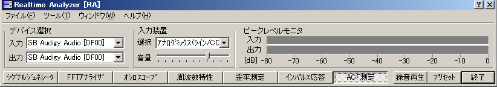
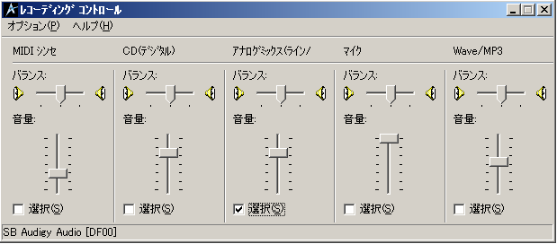

DSSF3 > RA > ACF/CCF測定 > 測定ガイド
入力デバイスの設定、ボリュームコントロール
リアルタイムアナライザ（以下、RAと表記）のメインウインドウで入力装置と入力デバイス（サウンドカード）を選択してください。

RAの入力装置選択と音量調節は、Windowsのボリュームコントロール（録音制御）と連動しています。RAでライン入力を選択すると、ボリュームコントロールでも以下のようにライン入力が選択されます。

FFTアナライザを開いて[開始]ボタンをクリックすると、メインウインドウにあるピークレベルモニタに入力レベルが表示されます。測定する音源を入力した状態で、ピークレベルが-10から-5dBになるように音量を調節してください。
DSSF3 > RA > ACF/CCF測定 > 測定ガイド